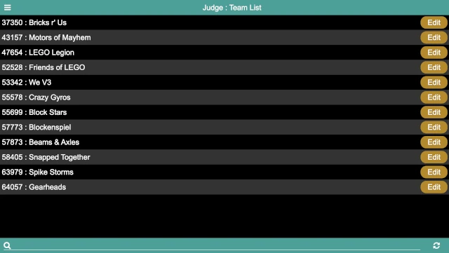

Judge
Note
The Judge page is only used if utlizing the League Model.
The judge page provides a means for the judges to enter rubrics at the conclusion of judging, while at the same time providing a way for the judge advisor to monitor the state of the rubrics entry. At first, it displays a list of the teams at the event:
The rubrics are color-coded:
- Yellow
This represents a rubric that has not been entered. At the start of the event, all the rubrics are yellow (as in the above image).
- Red
This represents a rubric that has been partially entered.
- Green
This represents a rubric that has been fully entered. At the end of the event, all rubrics should be green (unless there are no-shows, either to the entire event or to judging).
The list of teams can be scrolled through to find the team to be judged (they are listed in team number order), or the search at the bottom of the screen can be used to search (by either team name or team number).
The button in the bottom right refreshes the list of rubrics; in normal conditions, this is not necessary (as rubrics entred by other judges are automatically reflected onto all the judge’s displays); this can be used in case something doesn’t seem right, or to confirm that the latest and greatest is being displayed.
Clicking on the Edit button next to a team brings up the team’s rubric:
The rubrics match (if possible, otherwise closely approximates) the official rubrics. A choice must be made for every rubric condition before it is considered to be complete.
Note
Unlike the official rubrics, there is not a way to enter information about
why a team was awarded an Exceeds / 4 on one of the rubric areas, and
does not have a way to fill out the “Judging Session Feedback” rubric page.
Only the raw scores can be captured (since its purpose is to support the
League Model).
There are two buttons on the bottom of the rubric page:
- Discard /
This closes the rubric, discarding changes (if any). If there are changes, a confirmation dialog ensures that the changes should be discarded. If there are no changes, the rubric is closed immediately.
- Save /
This saves and then closes the rubric. The rubric can be saved even if it is not fully filled out.
Once fully entered, the rubric should be saved. Repeat for every team in your judging room throughout the event.
Note
Another approach to entering the rubrics is to scan the paper rubrics prior to returning them to the teams, and then enter them into the system after the event is over. This approach does not allow the league standings to be displayed at the end of the awards ceremony, however.